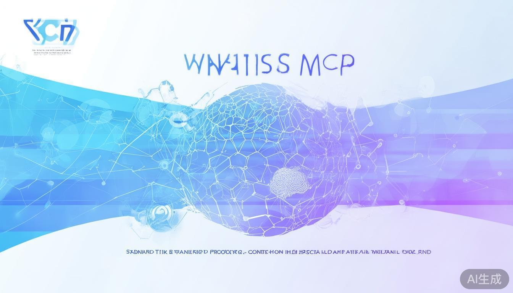

MCP 智能体应用开发：连接万物的标准协议
引言
MCP（Model Context Protocol）是Anthropic 2024年11月开源的大模型生态连接标准，被称为AI领域的「USB-C」。学完本章你将理解MCP核心架构与原语，能用官方SDK开发自定义MCP服务端，快速让任意LLM智能体对接本地文件、数据库、第三方API等资源，彻底告别重复定制工具集成的冗余工作。
什么是MCP

MCP全称Model Context Protocol，是Anthropic于2024年11月正式开源的开放协议标准，官方站点为modelcontextprotocol.io。该协议的核心目标是定义一套大模型应用与外部工具、数据、服务交互的统一规范，无论对接的是本地文件系统、企业数据库还是SaaS服务，都不需要为不同模型、不同应用单独开发适配层。
与此前各家大模型厂商自定义的工具调用格式不同，MCP是完全中立的开放标准，所有代码采用MIT协议开源，任何厂商、开发者都可以自由实现协议的客户端或服务端，不需要支付授权费用。你可以通过访问官方文档站点，查看最新的协议规范、SDK更新与生态兼容列表。
为什么需要MCP：解决N×M集成痛点
在MCP出现之前，大模型应用的工具集成存在典型的N×M适配问题：如果有N个大模型/智能体应用，M个外部工具/数据源，开发者总共需要编写N×M套定制化集成代码，比如给Claude写一套文件读取工具、给GPT写一套、给国内开源模型再写一套，对接数据库、API时还要重复开发适配逻辑，维护成本极高。
MCP的作用类比电子设备领域的USB-C接口：在USB-C普及之前，不同品牌的手机、笔记本需要不同的充电线、转接头，而USB-C统一了充电、数据传输、视频输出的标准，一根线可以对接所有外设。MCP就是AI智能体领域的通用接口，只要工具实现了MCP Server，所有兼容MCP的Host应用都可以直接调用，不需要额外适配，把N×M的集成成本降到了N+M。
我们可以用一张表直观对比MCP出现前后的开发成本：
| 集成模式 | 对接3个应用+5个工具的开发量 | 工具更新维护成本 |
|---|---|---|
| 定制化集成 | 3*5=15套适配代码 | 每次工具变更需要改3套代码 |
| MCP标准协议 | 3个Client +5个Server=8套代码 | 工具变更仅需更新对应Server |
MCP核心架构与三大原语
MCP采用三层经典架构，角色边界非常清晰：
- Host：承载大模型交互的主应用，比如Claude Desktop、支持MCP的AI IDE、自定义智能体应用，负责管理客户端连接、权限控制、大模型调用调度
- Client：Host内置的协议客户端，负责和单个MCP Server建立连接、转发请求、处理响应，一个Host可以同时启动多个Client对接不同的Server
- Server：对外提供工具、数据、提示模板的服务端，比如文件系统Server、SQLite Server、GitHub Server，只需要实现MCP协议规范，不需要关心对接的是哪个Host
MCP协议定义了三大核心交互原语，覆盖了智能体对接外部资源的所有场景：
- Tools（工具调用）：供大模型主动触发执行的能力，比如执行SQL查询、发送邮件、创建Git提交，适合需要产生实际操作、有副作用的场景，调用需要经过用户授权
- Resources（资源读取）：供大模型读取的静态/动态数据，比如本地文件内容、数据库表结构、API返回的业务数据，适合只读类的数据获取场景，不会产生副作用
- Prompts（提示模板）：可复用的预设提示词模板，比如「SQL优化助手」「代码审查模板」，用户或大模型可以直接调用模板快速生成高质量提示，不需要重复编写
你可以通过运行官方示例Server，观察三个原语的实际交互流程，验证方式：克隆官方仓库git clone https://github.com/modelcontextprotocol/servers.git后查看对应示例代码。
MCP传输方式与选型
MCP目前定义了两种官方支持的传输层协议，开发者可以根据部署场景按需选择：
第一种是stdio（标准输入输出）传输，主要用于本地场景：MCP Server作为Host启动的本地子进程运行，通过标准输入输出流和Client通信，不需要监听网络端口，部署简单、延迟极低，适合对接本地文件、本地数据库、本地应用的场景，也是Claude Desktop对接本地MCP Server的默认方式。
第二种是Streamable HTTP传输，主要用于远程场景：MCP Server部署在服务端，暴露HTTP接口，Client通过HTTP请求和Server通信，同时支持SSE（Server-Sent Events）实现服务端主动推送消息，适合对接云服务、跨设备访问、企业内部多用户共享工具的场景。2025年后该传输方式已经替代了早期的单独SSE传输规范，成为远程部署的推荐标准。
选型参考表：
| 传输方式 | 适用场景 | 网络要求 | 部署难度 | 安全性基础 |
|---|---|---|---|---|
| stdio | 本地单用户使用、本地资源对接 | 无网络 | 极低 | 继承本地进程权限 |
| Streamable HTTP | 远程多用户、云服务对接 | 公网/内网 | 中等 | 需额外配置鉴权 |
官方SDK与参考实现
MCP官方目前维护了两个生产级SDK，覆盖主流开发场景：
- Python SDK：包名为
mcp，支持Python 3.10+版本，适合快速开发数据处理、数据库对接、AI工作流类的MCP Server，安装命令为pip install mcp>=1.0.0 - TypeScript SDK：包名为
@modelcontextprotocol/sdk，支持Node.js 18+版本，适合开发Web类、前端工具类、Node生态相关的MCP Server，安装命令为npm install @modelcontextprotocol/sdk@^1.0.0
官方同时维护了开箱即用的参考实现仓库modelcontextprotocol/servers，已经提供了数十个常用的MCP Server实现，包括filesystem（本地文件访问）、git（Git仓库操作）、sqlite（SQLite数据库查询）、github（GitHub操作）、postgres（PostgreSQL数据库）、slack（Slack消息发送）等，开发者可以直接安装使用，不需要从零开发。
验证SDK安装是否成功：Python环境执行python -c "import mcp; print(mcp.__version__)"，TS环境执行npx @modelcontextprotocol/sdk --version，正常输出版本号即为安装成功。
实战：10行代码实现SQLite查询MCP Server
我们用Python SDK实现一个最小的SQLite查询MCP Server，功能是让智能体可以查询指定SQLite数据库的内容，步骤非常简单。首先确保已经安装依赖：执行pip install mcp>=1.0.0 sqlite3（sqlite3为Python标准库，大部分环境自带）。
创建sqlite_mcp_server.py文件，写入以下代码：
from mcp.server.fastmcp import FastMCP
import sqlite3
# 初始化MCP Server实例，名称设为sqlite-demo
mcp = FastMCP("sqlite-demo")
# 注册工具：执行SQL查询，传入db_path数据库路径与sql语句
@mcp.tool()
def query_sqlite(db_path: str, sql: str) -> list[dict]:
"""执行SQLite SELECT查询，返回查询结果列表，禁止执行INSERT/UPDATE/DELETE等写操作"""
conn = sqlite3.connect(db_path)
conn.row_factory = sqlite3.Row
try:
# 仅允许只读查询，避免误操作
if not sql.strip().upper().startswith("SELECT"):
return [{"error": "Only SELECT queries are allowed"}]
cursor = conn.execute(sql)
return [dict(row) for row in cursor.fetchall()]
finally:
conn.close()
if __name__ == "__main__":
# 默认使用stdio传输，供本地客户端连接
mcp.run()接下来可以用官方提供的MCP Inspector工具测试Server是否正常运行，执行命令：npx @modelcontextprotocol/inspector python sqlite_mcp_server.py，打开浏览器访问Inspector给出的本地地址，就可以在界面上测试query_sqlite工具，传入测试数据库路径和SELECT语句验证返回结果。如果使用Claude Desktop，只需要在配置文件中添加该Server的启动命令，重启后即可在Claude中直接通过自然语言查询本地SQLite数据库。
MCP生态现状与安全最佳实践
目前MCP已经获得了全行业大模型厂商的广泛支持：Anthropic的Claude Desktop从2024年12月起原生支持MCP，是最早落地的Host应用；OpenAI在2025年3月宣布ChatGPT、GPT-4o系列模型与Responses API原生支持MCP工具调用；Google Gemini、国内的豆包、通义千问、DeepSeek等厂商也在2025年陆续完成了MCP协议适配。官方运营的MCP Registry是公共MCP Server的注册中心，开发者可以在上面发布自己开发的Server供其他用户使用。Cloudflare在2026年8月推出了WebMCP开发者预览版，支持网页向浏览器内的AI代理暴露工具，具体特性请以Cloudflare官方文档为准。
在开发和使用MCP时，必须遵循三个核心安全最佳实践：
- 鉴权：远程部署的MCP Server必须配置OAuth 2.0或API Key鉴权，禁止未授权访问，不要把内部敏感工具暴露在公网
- 最小权限：MCP Server的运行权限要尽可能小，比如文件访问Server仅开放指定目录的只读权限，数据库工具仅开放SELECT权限，避免被恶意调用造成数据损失
- 提示注入防护：对工具返回的内容要做过滤，不要让工具返回的恶意提示词操纵大模型执行危险操作，涉及文件删除、资金操作等高风险工具必须增加用户二次确认环节
小结与练习
核心收获
- MCP是AI智能体领域的通用连接标准，解决了此前工具集成N×M的适配痛点，类比USB-C接口大幅降低开发成本
- MCP采用Host/Client/Server三层架构，提供Tools、Resources、Prompts三大原语，支持stdio和Streamable HTTP两种传输方式，覆盖本地与远程部署场景
- 官方提供Python/TS双语言SDK与大量开箱即用的参考Server，开发者可以快速开发自定义工具，且一次开发即可被所有兼容MCP的大模型应用使用
动手练习
- 本地完成SQLite MCP Server的开发与测试，用MCP Inspector连接Server，成功查询本地测试数据库的内容
- 从官方modelcontextprotocol/servers仓库安装filesystem Server，配置到Claude Desktop中，实现用自然语言管理本地指定目录的文件
- 扩展上述SQLite Server，新增一个Resource原语，支持大模型读取指定数据库的所有表结构信息，不需要执行SQL即可感知数据库Schema
扩展阅读方向
访问MCP官方文档的「Specification」板块，深入理解MCP协议的生命周期、权限控制、错误处理规范，尝试开发一个对接个人常用SaaS服务（如Notion、飞书）的自定义MCP Server。
本文由本站 AI 创作整理，内容基于公开知识/官方资料提炼，信息请以官方发布为准； 涉及的历史事件、产品与数据均可在公开渠道查证，本站不编造来源。引用外部内容遵循其原始许可，标注出处即可。